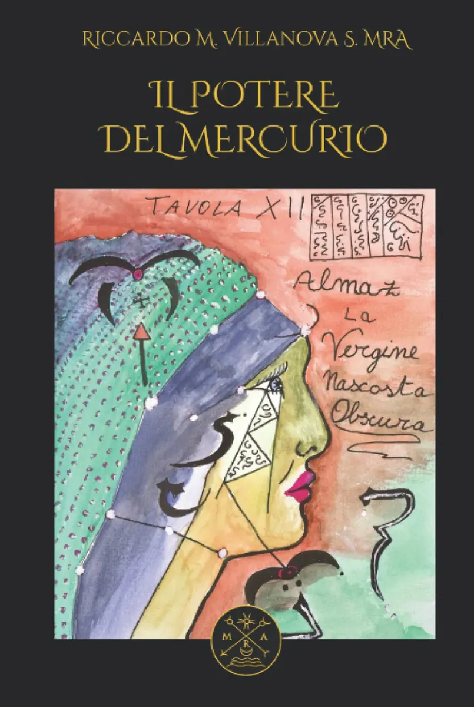
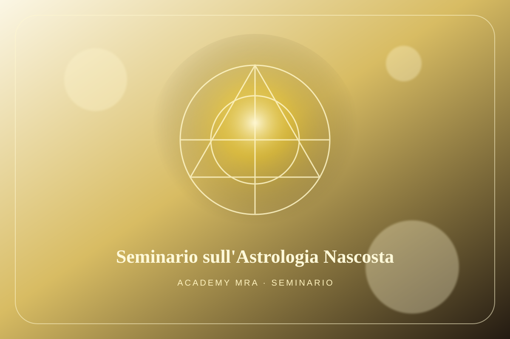
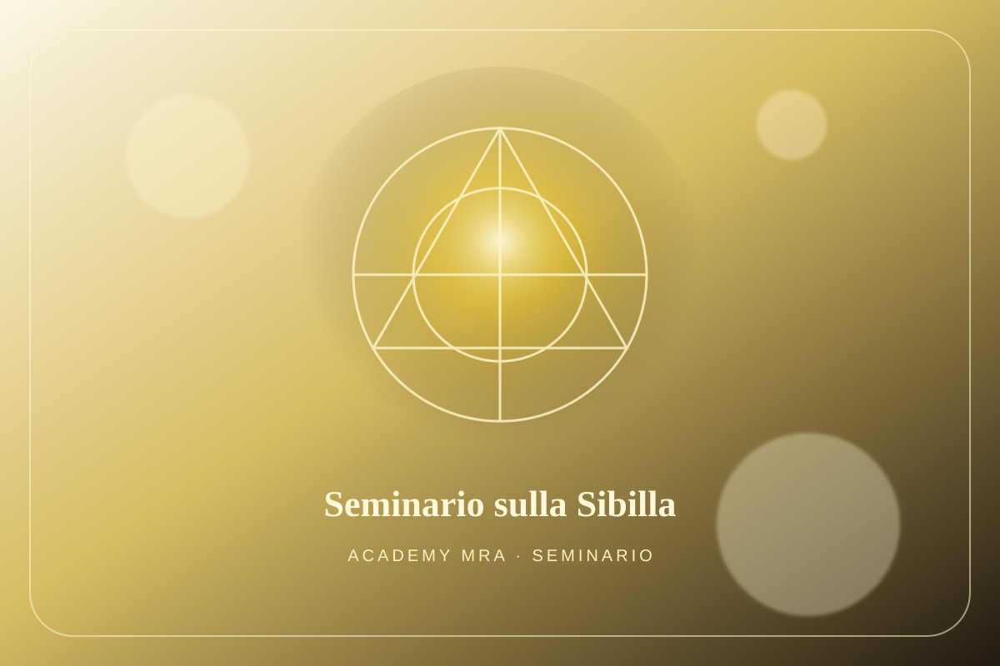
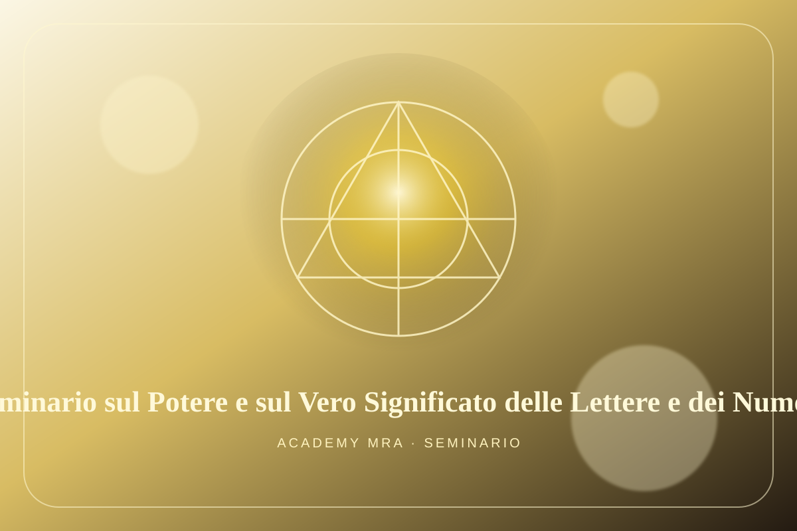
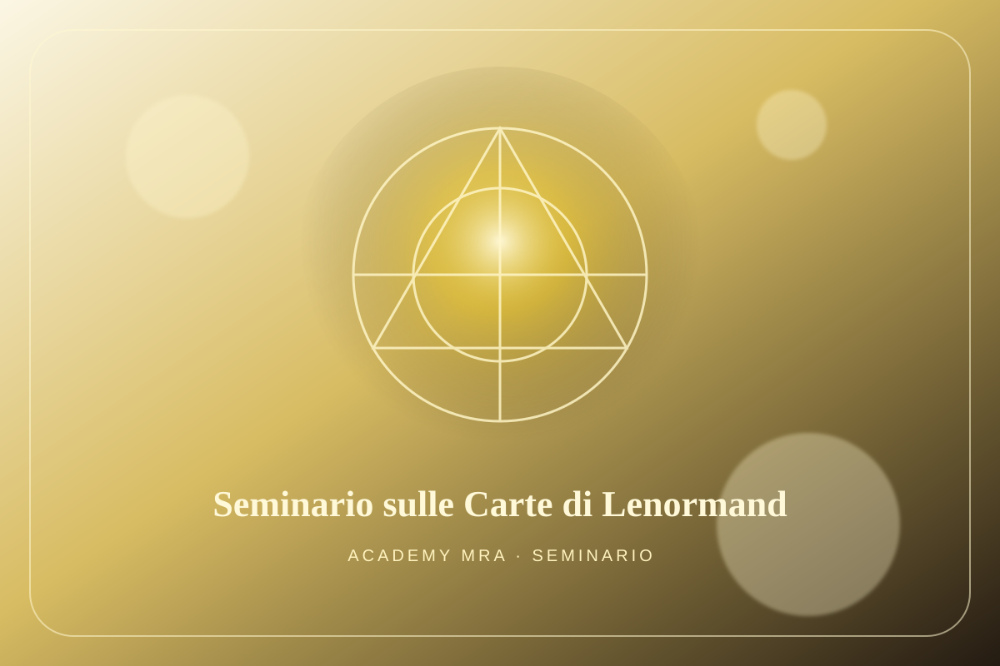
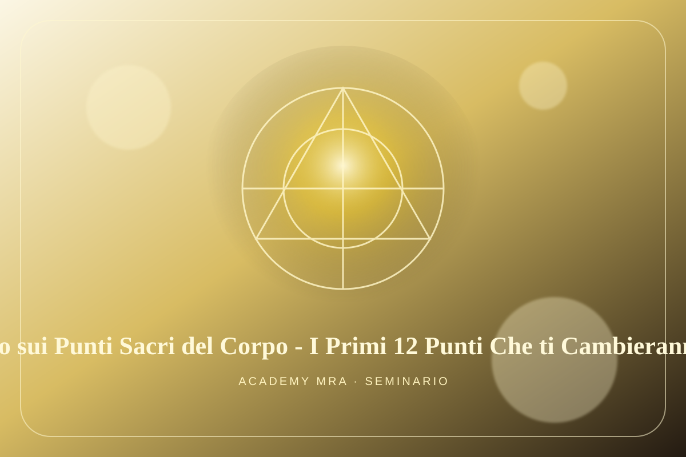
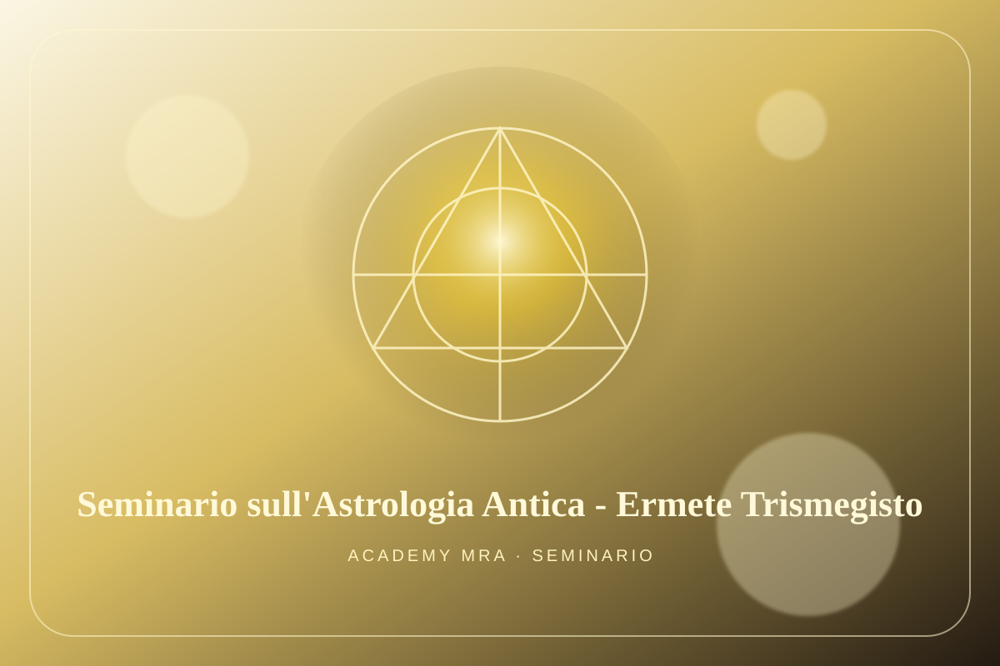

Seminari
Una selezione di seminari AcademyMRA - CAUM dedicati alle diverse aree della Scienza Ammonia.

Seminario - Il Mistero dell'Anima Rossa
Un percorso dedicato al simbolismo dell’anima, alla forza vitale rossa e ai processi interiori di risveglio, purificazione e trasformazione.

Seminario sugli Advices
Un approfondimento sugli orientamenti operativi e sulle indicazioni di lavoro interiore utili per sostenere disciplina, ascolto e pratica.

Seminario sugli Anelli Magici
Un seminario sul valore simbolico e rituale dell’anello, inteso come sigillo, cerchio di forza e strumento di protezione.

Seminario sulle Antiche Tecniche Di Trasformazione Della Realtà
Un lavoro sulle tecniche tradizionali di trasformazione della percezione, della volontà e del rapporto tra coscienza e realtà.

Seminario sull'Ars Moriendi
Una riflessione iniziatica sull’arte del morire, sul distacco, sulla soglia e sulla rinascita della coscienza oltre le forme ordinarie.

Seminario sul Biomagnetismo Protettivo
Un approfondimento sulle dinamiche sottili di protezione, equilibrio energetico e campo vitale personale.

Seminario sull'Astrologia Esoterica
Un seminario dedicato alla lettura simbolica del cielo come via di conoscenza interiore e orientamento dell’anima.

Seminario sull'Astrologia Nascosta - La Terra
Un percorso sul significato occulto della Terra, sulle corrispondenze astrologiche e sulla relazione tra corpo, destino e cosmo.

Seminario sulla Deprogrammazione
Un lavoro di scioglimento dei condizionamenti interiori, delle forme mentali ripetitive e delle strutture che limitano la coscienza.

Seminario sulla Fisiognomica
Un’introduzione alla lettura dei segni del volto e del corpo come linguaggio simbolico dell’interiorità e del carattere.

Seminario sulla Geometria Sacra
Un seminario sulle forme, le proporzioni e le linee di forza come strumenti di ordine, armonizzazione e trasformazione.

Seminario sulla Liberazione della Coscienza attraverso i Film - HOD
Una tappa del percorso cinematografico dedicata al simbolismo di Hod, alla mente, al linguaggio e alle immagini della coscienza.
Seminario sulla Liberazione della Coscienza attraverso i Film - MATRIX
Un lavoro sul film Matrix come mappa simbolica del risveglio, dell’illusione programmata e della scelta interiore.
Seminario sulla Liberazione della Coscienza attraverso i Film - HUNGER GAMES - THE ISLAND
Un’analisi simbolica di narrazioni cinematografiche legate a controllo, sacrificio, identità e liberazione personale.

Seminario sulla Liberazione della Coscienza attraverso i Film - NETZACH
Una tappa dedicata alle immagini di Netzach, al desiderio, alla vittoria interiore e alle forze emotive della coscienza.

Seminario sulla Liberazione della Coscienza attraverso i Film - PAROKETH
Un seminario sul velo di Paroketh, sulle soglie simboliche e sul passaggio tra personalità, visione e centro interiore.
Seminario sulla Magia Trasmutatoria
Un approfondimento sulla magia come pratica di trasformazione dell’essere, della volontà e delle energie interiori.

Seminario sui Patti di Sangue del Vaticano e delle Casate Nobiliari
Un seminario sui legami simbolici del sangue, sui patti, sulle genealogie di potere e sulle dinamiche occulte delle casate.
Seminario sul Potere e il Vero Significato delle Lettere e dei Numeri
Un percorso sul valore operativo di lettere e numeri come chiavi, segni e forme vive del linguaggio sacro.
Seminario sulla Cabala Segreta
Un’introduzione ai percorsi nascosti della Cabala, alle corrispondenze simboliche e alla struttura dell’albero interiore.

Seminario sulle Sette Teste del Drago
Un lavoro sui simboli del drago, sulle sue sette teste e sulle forze da riconoscere e trasmutare nel cammino interiore.

Seminario sull'Entrata nel Mistero dell'Ombra
Un seminario sulla discesa consapevole nell’ombra, sulla magia assiro-babilonese e sull’integrazione delle parti nascoste.

Seminario sulla Magia Eonica
Un approfondimento sulle correnti eoniche, sui cicli di forza e sulle energie che attraversano epoche, simboli e coscienze.
Seminario sulla Magia Stellare - Spica
Un seminario sulle influenze stellari, con focus su Spica come simbolo di luce, fecondità spirituale e orientamento celeste.

Seminario sulle Pietre ed i Cristalli
Un percorso sulle qualità simboliche e sottili di pietre e cristalli, intesi come strumenti di accordo, memoria e concentrazione.
Seminario sui Segni, Sigilli e Cifre di Passo per il Multiverso
Un lavoro su segni, sigilli e cifre come chiavi di passaggio, protezione e orientamento tra piani simbolici differenti.
Seminario sui Tatuaggi n.1
Prima parte del percorso sul tatuaggio come segno inciso, memoria del corpo e forma simbolica di appartenenza e trasformazione.

Seminario sui Tatuaggi n.2
Seconda parte dedicata al tatuaggio come scultura del corpo lunare, sigillo personale e traccia rituale sulla pelle.
Seminario sul Sangue Rosso e sul Sangue Blu
Un seminario sui due modi di purificazione, sul simbolismo del sangue e sulle diverse vie di trasformazione della natura interiore.
Seminario sulla Magia Arturiana
Un percorso sul ciclo arturiano, sulla cerca, sulla cavalleria interiore e sui simboli iniziatici della tradizione del Graal.
Seminario sulla Magia dei Gruppi Sanguigni n.1
Prima parte dedicata al rapporto tra sangue, temperamento, energia ereditaria e pratiche di conoscenza della propria natura.
Seminario sulla Magia dei Gruppi Sanguigni n.2
Seconda parte del lavoro sui gruppi sanguigni, con ulteriori corrispondenze simboliche e operative legate alla forza vitale.
Seminario sulla Magia della Luce
Un seminario sulla luce come principio di visione, purificazione, orientamento e accensione della coscienza.
Seminario sulla Pittura Magica
Un percorso sulla pittura come atto magico, immagine viva e strumento di contatto con forme, simboli e forze interiori.
Seminario sulla Scrittura Automatica n.1
Prima parte dedicata alla scrittura automatica come pratica di ascolto, contatto sottile e traduzione delle immagini interiori.
Seminario sulla Scrittura Automatica n.2
Seconda parte del lavoro sulla scrittura automatica, con approfondimento della disciplina, della ricezione e della verifica interiore.
Seminario sulla Tecnica per Vedere l'Aura e le Vite Passate
Un seminario dedicato alla percezione sottile, alla memoria profonda e alle tecniche di lettura dei campi interiori.
Seminario sull'Animazione delle Statue
Un lavoro sul simbolismo della statua, sull’immagine consacrata e sulle tecniche di vivificazione rituale della forma.
Seminario sulle Carte Francesi
Un seminario sull’uso simbolico e divinatorio delle carte francesi, tra segni, semi, numeri e lettura dell’accadere.
Seminario sulle Costellazioni e le Stelle del Destino
Un percorso sul linguaggio delle costellazioni, sulle stelle come segni del destino e sulla loro risonanza interiore.
Seminario sulle Tecniche Magiche dei Tarocchi
Un approfondimento sui Tarocchi come strumenti magici, chiavi operative e porte simboliche dei ventidue arcani.
Seminario sull'Ermetica Armonica
Un seminario sulle corrispondenze tra armonia, ritmo, proporzione e sapere ermetico come via di accordo interiore.
Seminario sui Tarocchi Stellari
Un lavoro sulle relazioni tra Tarocchi, stelle e piani simbolici, per leggere gli arcani come mappa celeste della coscienza.

Seminario sulle Tecniche di Emersione dell'Uomo Storico
Un percorso sulle tecniche di emersione dell’identità profonda, della memoria storica e della presenza autentica dell’essere.

Seminario sull'Arte e Pratica di Visione nel Cristallo e nello Specchio Magico - La Bottiglia di Cagliostro
Un seminario sulla visione nel cristallo e nello specchio magico, tra immaginazione attiva, concentrazione e arte della contemplazione.
Seminario sull'Astrologia Alchemica
Un approfondimento sulle corrispondenze tra astrologia e alchimia, tra influssi celesti, metalli interiori e trasformazione dell'essere.
Seminario sulla Conoscenza dei Propri Traumi Pre e Post Nascita
Un lavoro di riconoscimento delle memorie profonde legate alla fase prenatale, alla nascita e alle tracce emotive lasciate nell'anima e nel corpo.

Seminario sull'Astrologia Nascosta
Un seminario dedicato ai livelli più interiori dell'astrologia, alle forze celate del tema e alla lettura simbolica delle influenze sottili.
Seminario sulla Deprogrammazione n.2
Una seconda tappa di approfondimento sulla deprogrammazione, orientata a sciogliere automatismi, condizionamenti e strutture interiori ripetitive.
Seminario sulla Taumaturgia
Un percorso sull'arte della guarigione, sulle pratiche di riequilibrio e sull'uso consapevole della forza sottile a beneficio della vita.
Seminario sulla Geometria Sacra - Primo Livello
Un primo livello dedicato alle forme, alle proporzioni e ai diagrammi della geometria sacra come strumenti di accordo, ordine e proiezione.

Seminario sulla Sibilla
Un seminario sulle carte della Sibilla, sul loro linguaggio simbolico e sulle modalità di lettura e interpretazione in chiave operativa.

Seminario sul Potere e sul Vero Significato delle Lettere e dei Numeri
Un approfondimento su lettere e numeri come forze vive del linguaggio sacro, segni di potere e chiavi di comprensione.

Seminario sulle Carte di Lenormand
Un lavoro dedicato alle carte Lenormand, ai loro archetipi essenziali e all'arte di comporre letture chiare e simbolicamente efficaci.
Seminario sule Catene del Cuore
Un seminario sui legami del cuore, sui vincoli affettivi, sulle dipendenze sottili e sulle dinamiche interiori che uniscono o trattengono.
Seminario sull'Entrata nel Mistero dell'Ombra
Un'entrata guidata nel mistero dell'ombra, nelle sue forze nascoste e nei processi di integrazione delle parti non viste di sé.
Seminario sulla Lettura del Corpo
Un percorso di osservazione simbolica del corpo come testo vivente, memoria incarnata e linguaggio dell'interiorità.
Seminario sulla Magia Trasmutatoria
Un seminario sulla trasmutazione delle energie, sulla conoscenza delle forze in gioco e sulla loro applicazione nel cammino personale.
Seminario sull'Onomantica
Un approfondimento sul potere dei nomi, sulla vibrazione sonora e sul significato iniziatico dell'identità nominata.
Seminario sugli Impianti Mentali
Un seminario dedicato al riconoscimento degli impianti mentali, dei meccanismi indotti e delle strutture che limitano la libertà interiore.
Seminario sul Tatuaggio Sacro
Un lavoro sui segni impressi sul corpo, sul simbolo tatuato come forma vivente e sulla sua funzione rituale e protettiva.
Seminario sulla Liberazione dagli Impianti Psichici
Un approfondimento sulle tecniche di liberazione da condizionamenti psichici, intrusioni sottili e forme di influenza non riconosciute.
Seminario sulla Purificazione dei Cibi
Un seminario dedicato ai gesti, ai simboli e alle pratiche di purificazione del nutrimento per ristabilirne qualità, ordine e forza.
Seminario sulla Talismanica Difensiva ed Ottenitiva
Un percorso su talismani, sigilli e costruzioni operative orientate sia alla difesa sia all'ottenimento di ciò che si ricerca.
Seminario sulle Tecniche per Entrare nel Sottile e Crearsi il Proprio Mondo Post-Mortem
Un seminario sulle tecniche di accesso al sottile, sulla continuità della coscienza e sulla costruzione del proprio paesaggio interiore oltre la soglia.

Seminario sui Punti Sacri del Corpo - I Primi 12 Punti Che ti Cambieranno la Vita
Un lavoro pratico sui primi dodici punti sacri del corpo, intesi come nodi energetici, chiavi di coscienza e strumenti di trasformazione.

Seminario sull'Astrologia Antica - Ermete Trismegisto
Un seminario dedicato alle radici ermetiche dell'astrologia antica e agli insegnamenti attribuiti a Ermete Trismegisto.